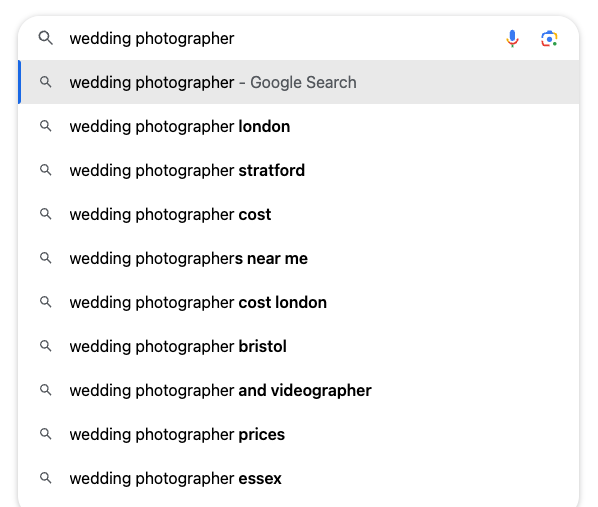

Lucy Bramson
13 November 2023
Forging and maintaining a strong online presence is crucial for small businesses. Search Engine Optimization (SEO) is the key to increasing your visibility in search engines like Google and driving organic traffic to your website. This guide will explore how small businesses can effectively leverage SEO to improve their online presence and attract more customers.
SEO is the practice of optimizing your website and its content to rank higher in search engine results. When users search for products, services, or information related to your business, SEO helps your website appear at the top of the search results, making it more likely that potential customers will find and click on your site.
Whether your site has been live for a while, or you’re getting ready to launch, data is your friend. Google provides two free, easy to use tools to help collect data: Google Analytics and Google Search Console. The two tools have different uses, and are best used together to understand your site’s performance.
Now that you have your data gathering set up, it’s time to target keywords. Keywords are fundamental to SEO, so it is important to get them right. Keyword research is all about identifying relevant search terms being used by your potential customers, and analysing competition for keywords. There are several paid and non-paid tools to help you with keyword research, such Google Ads Keyword Planner and Moz Keyword Explorer.
Analyse the keywords your competitors are ranking for and understand their content and who they are targeting. This can help you identify gaps and opportunities in your own SEO efforts.
Usability is paramount for your visitors, and according to research, 94% of people think easy navigation is the most important website feature. In many cases, as a small business grows, the website grows as well, and extra pages are shoehorned in without proper planning and review of site structure. Poor navigation and confusing site architecture increase bounce rate (people leaving your website), which in turn pushes you down the results page.
Review your site structure and navigation, checking that all information is easy to find in a few clicks. Map out the links between each of your pages, and test it by challenging others to find specific information/functionality within your site. If they struggle, even slightly, this is a clear indication that you still have work to do!
This is all about including your keywords in your content. As a general guide, aim to include your keywords in your URL, page headings, links, and the first 100 words of your copy. A good rule of thumb is that 1-2% of the words on your page should be keywords. Keywords should be included naturally, avoiding over-use (keyword stuffing), as this is identified by Google as a spam tactic, and negatively impacts your ranking.
Some additional on-page elements to consider:
Image alt text: this is descriptive text used by screen readers to explain an image. Keywords can be included here if relevant, but remember that accessibility needs to be maintained.
Metadata: this is the text that shows up on the search engine results page (SERP) and previews your content. This is important because users scan this information when deciding which of the links to click through. Search engine results comprise of meta titles and meta descriptions:
Meta title: This is the clickable title of the search result, and you should aim to make it:
max 50-60 characters
clear and concise
include keywords
Meta description: This is the description under the meta title, aim to make it:
120-158 characters
descriptive and enticing
include keywords
treat meta descriptions like the rest of your copy – focus on connecting with your audience by using emotive language
use your brand voice
Revisit your competitor analysis, as you can learn a lot from the metadata of the highest ranking of your competition!
For small businesses with physical locations, local SEO is crucial. Create and optimize your Google My Business listing with accurate business information, reviews, and photos. If you have different locations, consider local landing pages. This can improve your visibility in local search results and on Google Maps. Ensure that your business is listed in local directories and review sites. Consistent and accurate information across these platforms can improve your local SEO.
Ensure that your website is mobile-friendly. Google prioritizes mobile-responsive sites, and a large portion of users access websites through their phones. A mobile-optimized site improves user experience and your search engine ranking.
Fast-loading websites are favoured by search engines. Optimize your site's speed by compressing images, reducing server response time, and using browser caching. Users are more likely to stay on and engage with faster websites.

High-quality backlinks from reputable websites can improve your search ranking. Seek opportunities to guest post on industry-related blogs and encourage others to link to your content. Business associates such as suppliers and contractors can be a be a good place to start asking for links! You can also ask for links in testimonials.
Integrate social media into your SEO strategy. Share content on your social media profiles, encouraging user engagement and sharing. Social signals (likes, shares etc.) can indirectly impact your search engine ranking.
Consistently update your website with fresh and compelling content. This keeps visitors engaged and signals to search engines that your site is active and relevant. Google search suggestions can give valuable insights into topics potential customers are searching for.

SEO is an evolving field, so continuous learning is essential. Stay up to date with industry trends and algorithm changes to maintain a strong SEO strategy.
If you find SEO daunting or time-consuming, consider hiring an SEO professional or agency with expertise in helping small businesses. Some web designers and developers offer SEO as part of their package. They can provide you with valuable insights and save you time and effort.
Be patient, SEO takes time.
The amount of time it takes to see the fruits of your SEO labours on Google’s results page will vary according to many factors, including your competition, location and niche. In most cases, you can expect to wait 6 months, sometimes up to a year to see your effort paying off. This is assuming consistent effort, so it is important to continue reviewing your SEO and putting out good quality content in order to see a decent amount of organic traffic. If you need quicker results, consider paid ads.
Google favours good customer service, which is measured in the form of interactions, so responding to all blog comments and Google reviews will benefit your search engine performance. You could consider incentivizing your customers to leave you reviews!
Technical SEO is a broad field that is mostly out of scope of this article, but it should be noted that Google Search Console can be used to find and in some cases fix a number of errors:
Pages Google can’t find or crawl
Broken links
Slow site speed
Sitemap errors
Duplicate content
Web security issues
Schema implementation errors (schema is data that can be added to your code to provide google with more information about your page)
SEO is not just for big corporations; small businesses can greatly benefit from it too. By implementing these SEO best practices, you can improve your online visibility, drive organic traffic to your website, and ultimately grow your customer base. With a solid SEO strategy, your small business can compete effectively in the digital marketplace, attracting more customers and increasing revenue.